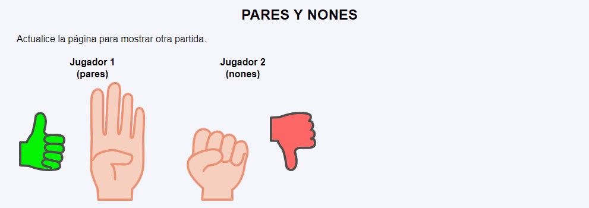

Examen - Pares y Nones en JavaScript
En este ejercicio, debes crear un programa que simule el juego de "Pares y Nones" en una página web. Las reglas del juego son las siguientes:
- Hay dos jugadores, el Jugador 1 y el Jugador 2.
- Cada jugador muestra un número de dedos de la mano, de ninguno a todos los dedos.
- El programa contará el total de dedos mostrados por ambos jugadores.
- El Jugador 1 ganará si el total de dedos es un número par.
- El Jugador 2 ganará si el total de dedos es un número impar.
Requisitos de la página web:
- Se deben mostrar imágenes de las manos de ambos jugadores de manera aleatoria.
- Se mostrará una imagen verde junto al jugador ganador y una imagen roja junto al jugador perdedor.
- Al actualizar la página, se debe iniciar una nueva partida con manos aleatorias.
- Debes mantener un registro en la sesión del historial de quién ha ganado las últimas partidas.
- Debe haber un botón "Volver a tirar" para refrescar la página y jugar otra partida.
- Debe haber un botón "Reset" para comenzar el historial nuevamente.
Nota: En JavaScript, puedes utilizar el operador '%' para verificar si un número es par o impar. Por ejemplo:
if (numero % 2 === 0) {
// Número par
} else {
// Número impar
}
- Capturas de pantalla de ejemplo:

Pares y nones - Ejemplo de código HTML
<tr>
<td><img src="img/gana.svg" alt="Gana" height="100"></td>
<td><img src="img/4.svg" alt="4" height="200"></td>
<td><img src="img/0.svg" alt="0" height="200"></td>
<td><img src="img/pierde.svg" alt="Pierde" height="100"></td>
</tr>
Asegúrate de tener las imágenes necesarias en la carpeta adecuada y ajusta las rutas de las imágenes en tu código JavaScript y HTML. ¡Diviértete creando el juego!